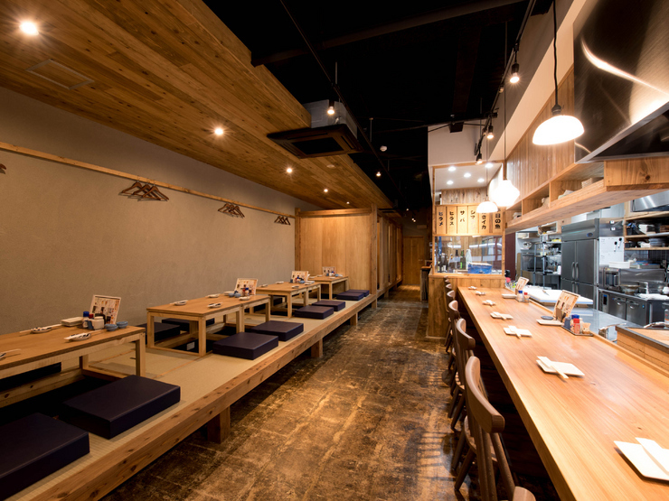

活き造り
鮮魚の活造は、季節ごと日替わりとなります。
鮮魚は店内の生簀で管理されており、新鮮な魚と店主熟練の技を味わえます。
鮮魚は店内の生簀で管理されており、新鮮な魚と店主熟練の技を味わえます。
空間

4名の個室が3部屋あり、仕切りを外すと16名様で使用できます。
手前の座敷席も合わせればさらに大人数の宴会にも対応可能。
貸切の場合は約60名様位までとなります。
手前の座敷席も合わせればさらに大人数の宴会にも対応可能。
貸切の場合は約60名様位までとなります。